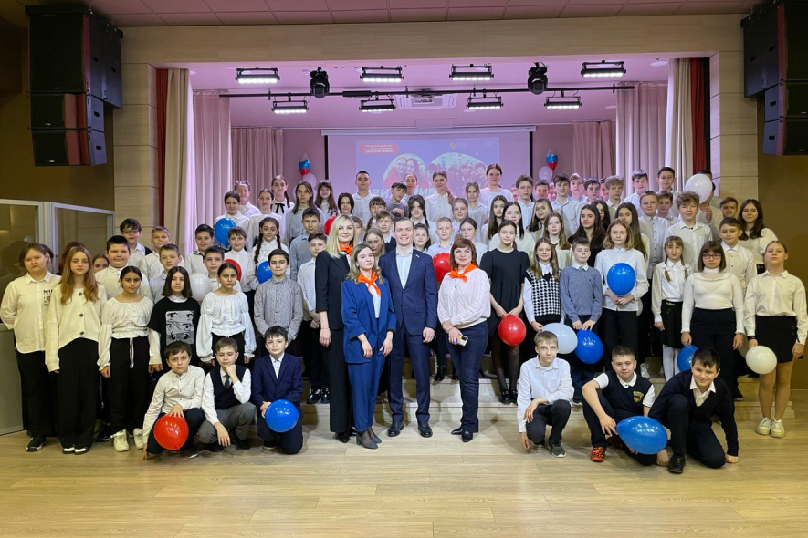
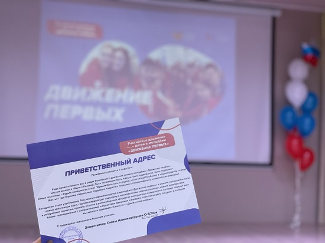

Миссия Движения

Мы объединились в движение, чтобы обеспечить России великое будущее, чтобы сделать достойной и счастливой жизнь всех поколений, чтобы менять мир к лучшему!
Мы считаем себя ПИОНЕРАМИ своего Отечества!
Мы хотим быть ПЕРВЫМИ в знаниях и творчестве, на защите Родины, в науке и технологиях, в труде и спорте, в сохранении природы и везде, где хотим исполнить наши мечты!
Мы — ПЕРВООТКРЫВАТЕЛИ мира и готовы изменить его к лучшему!
Наши ценности

Взаимопомощь и уважение
Участники Движения действуют как одна команда, помогая друг другу в учебе, труде, поиске и раскрытии таланта каждого. Плечом к плечу преодолевают трудности. Уважают особенности каждого участника Движения, создавая пространство равных возможностей.
Единство народов России
Участники Движения, являясь новыми поколениями многонационального и многоконфессионального народа России, уважают культуру, традиции, обычаи и верования друг друга. Это уникальное достояние нашей страны: народов много, Родина – одна.
Историческая память
Участники Движения изучают, знают и защищают историю России, противостоят любым попыткам её искажения и очернения. Берегут память о защитниках Отечества.
Добро и справедливость
Участники Движения действуют по справедливости, распространяют добро, считают доброту качеством сильных людей. Внутренний голос каждого говорит нам, что только добрые дела меняют жизнь к лучшему.
Мечта
Участники Движения умеют мечтать и воплощать свои мечты в жизнь. Смелые мечты открывают человеку новые возможности, а человечеству – неизведанные горизонты.
Созидательный труд
Каждый участник Движения своим трудом приносит пользу: создаёт новое качество своих знаний, умений и навыков, применяет их во благо своей семьи, Движения и всей страны.
Жизнь и достоинство
Участники Движения в первую очередь ценят жизнь каждого человека, чувство собственного достоинства и заботятся о сохранении достоинства окружающих.
Патриотизм
Участники Движения любят свою Родину - Россию. Любовь к стране проявляется в делах и поступках.
Дружба
Движение – источник Дружбы для каждого из участников. Вступая в Движение, каждый может найти себе друзей близких по убеждениям, увлечениям, интересам и возрасту. В Движении друзья всегда рядом.
Служение Отечеству
Участники Движения объединены с Отечеством одной судьбой. Каждый на своем месте готовит себя к служению Отечеству и ответственности за его будущее.
Крепкая семья
Участники Движения разделяют традиционные семейные ценности. Гордятся российской культурой отцовства и материнства. Уважают многодетность. Помогают младшим, заботятся в семье о бабушках и дедушках.